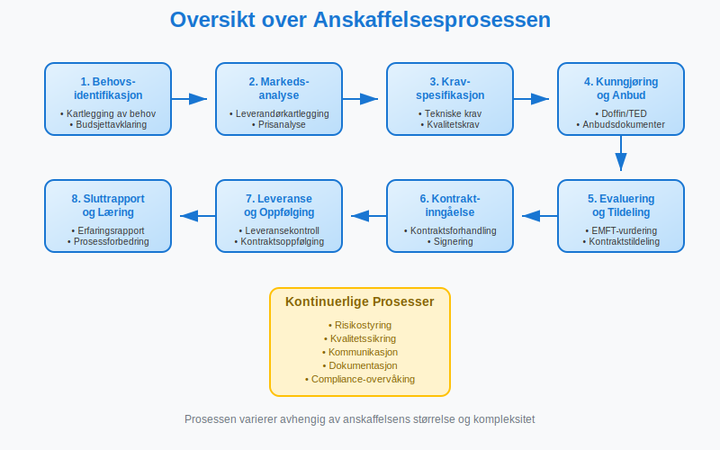
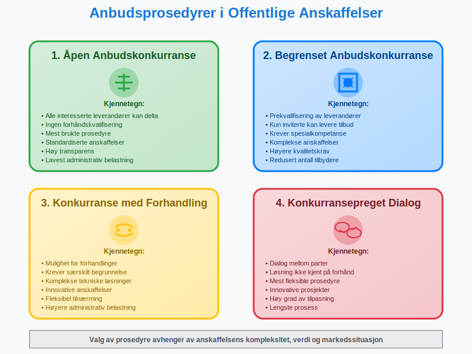
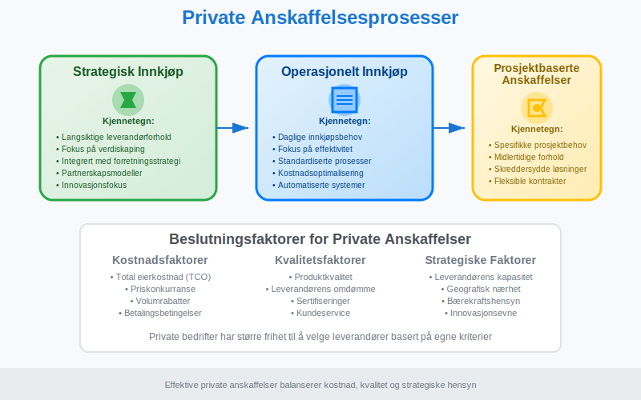
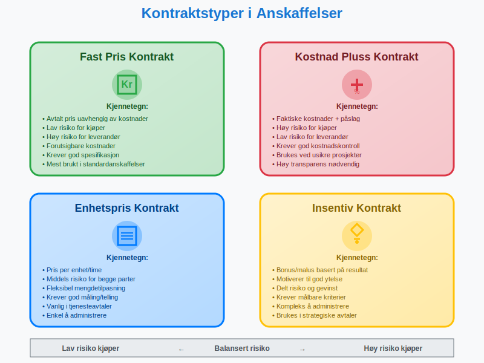
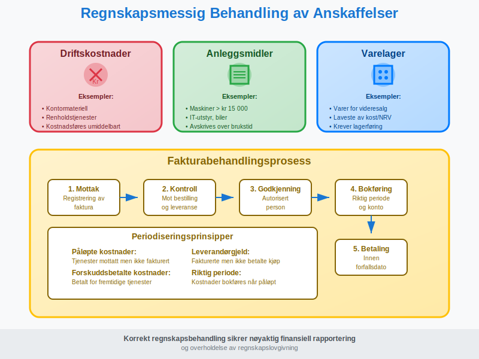
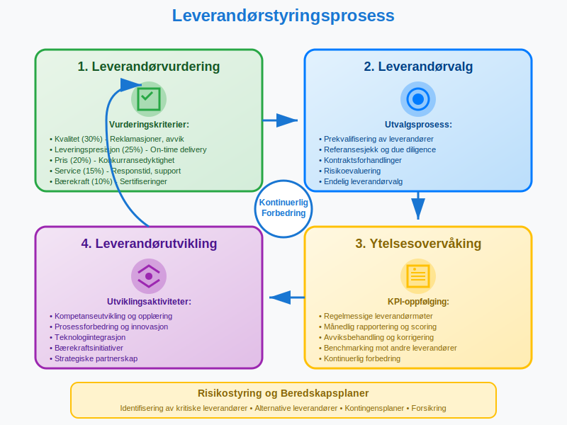
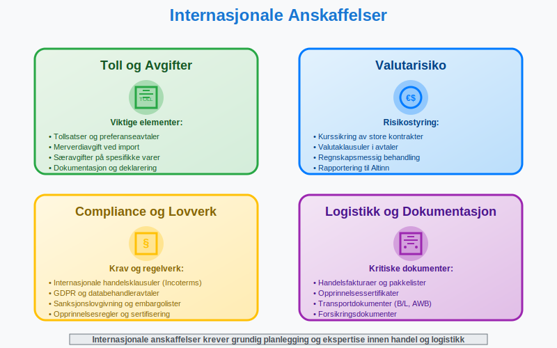

Anskaffelser er prosessen med å kjøpe varer, tjenester eller bygge- og anleggsarbeider for å dekke en organisasjons behov. I Norge skilles det mellom offentlige anskaffelser, som er underlagt strenge regelverk, og private anskaffelser, som har større frihet i valg av leverandører og prosedyrer. For handelsbedrifter utgjør varekjøp en spesiell kategori anskaffelser som er ment for videresalg til kunder.
Offentlige Anskaffelser
Offentlige anskaffelser reguleres av anskaffelsesloven og tilhørende forskrifter. Formålet er å sikre at offentlige midler brukes effektivt, og at alle leverandører får like muligheter til å konkurrere om offentlige kontrakter.

Terskelverdier og Prosedyrer
Anskaffelsesregelverket opererer med ulike terskelverdier som bestemmer hvilke prosedyrer som skal følges:
| Kontraktsverdi | Prosedyre | Kunngjøring |
|---|---|---|
| Under 100 000 kr | Forenklet prosess | Ikke påkrevd |
| 100 000 - 1 300 000 kr | Nasjonal konkurranse | Doffin |
| Over 1 300 000 kr | EU-konkurranse | Doffin + TED |
| Bygge- og anleggskontrakter over 33 500 000 kr | EU-konkurranse | Doffin + TED |
Beløpene er eksklusive merverdiavgift og gjelder for 2024
Anbudsprosedyrer
Det finnes flere typer anbudsprosedyrer i offentlige anskaffelser:

1. Åpen anbudskonkurranse
- Alle interesserte leverandører kan levere tilbud
- Mest brukte prosedyre for standardiserte anskaffelser
- Ingen forhåndskvalifisering av leverandører
2. Begrenset anbudskonkurranse
- Prekvalifisering av leverandører
- Kun inviterte leverandører kan levere tilbud
- Brukes når spesialkompetanse kreves
3. Konkurranse med forhandling
- Mulighet for forhandlinger med leverandører
- Brukes ved komplekse anskaffelser
- Krever særskilt begrunnelse
4. Konkurransepreget dialog
- Dialog mellom oppdragsgiver og leverandører
- Brukes når løsningen ikke er kjent på forhånd
- Mest fleksible prosedyre
Evalueringskriterier
Offentlige anskaffelser skal tildeles basert på økonomisk mest fordelaktige tilbud (EMFT). Dette kan vurderes ut fra:
- Pris eller kostnad
- Kvalitet av varer/tjenester
- Miljøhensyn og bærekraft
- Sosiale hensyn
- Innovasjon og tekniske egenskaper
Private Anskaffelser
Private virksomheter har større frihet i sine anskaffelser, men må likevel følge god forretningsskikk og eventuelle bransjestandarder.

Innkjøpsstrategier
Private bedrifter kan velge mellom ulike innkjøpsstrategier:
Strategisk Innkjøp
- Langsiktige leverandørforhold
- Fokus på verdiskaping
- Integrert med forretningsstrategien
Operasjonelt Innkjøp
- Daglige innkjøpsbehov
- Fokus på effektivitet
- Standardiserte prosesser
Prosjektbaserte Anskaffelser
- Spesifikke prosjektbehov
- Midlertidige leverandørforhold
- Skreddersydde løsninger
Kontraktstyper og Avtaleformer
Uavhengig av om det er offentlige eller private anskaffelser, finnes det flere typer kontrakter:

Prismodeller
| Kontraktstype | Beskrivelse | Risiko for kjøper | Risiko for leverandør |
|---|---|---|---|
| Fast pris | Avtalt pris uavhengig av kostnader | Lav | Høy |
| Kostnad pluss | Faktiske kostnader + påslag | Høy | Lav |
| Enhetspris | Pris per enhet/time | Middels | Middels |
| Insentivkontrakt | Bonus/malus basert på resultat | Lav-Middels | Middels-Høy |
Rammeavtaler
Rammeavtaler er særlig viktige i offentlige anskaffelser:
- Etablerer vilkår for fremtidige kjøp
- Gyldig i opptil 4 år
- Kan ha flere leverandører
- Krever minikonkurranse ved bestilling
Regnskapsmessig Behandling
Anskaffelser har betydelige regnskapsmessige konsekvenser som må håndteres korrekt.

Klassifisering av Anskaffelser
Anskaffelser klassifiseres forskjellig i regnskapet:
Driftskostnader
- Forbruksvarer og tjenester
- Kostnadsføres umiddelbart
- Eksempler: kontormateriell, renholdstjenester
Anleggsmidler
- Varige driftsmidler over kr 15 000
- Avskrives over brukstiden
- Eksempler: maskiner, IT-utstyr, biler
Varelager
- Varer for videresalg
- Verdsettes til laveste av kost og netto realisasjonsverdi
- Krever lagerføring og periodisk telling
Leverandørgjeld og Fakturabehandling
Korrekt behandling av leverandørfakturaer og kreditorhåndtering er kritisk:
- Mottak og registrering av faktura gjennom bilagsmottak
- Kontroll mot bestilling og leveranse
- Godkjenning av autorisert person gjennom attestering
- Bokføring i riktig periode
- Betaling innen forfallsdato
Periodisering
Periodiseringsprinsippet krever at kostnader bokføres i riktig periode:
- Påløpte kostnader: Tjenester mottatt men ikke fakturert
- Forskuddsbetalte kostnader: Betalt for fremtidige tjenester
- Leverandørgjeld: Fakturerte men ikke betalte kjøp
Digitalisering av Anskaffelser
Moderne anskaffelser blir stadig mer digitaliserte, noe som påvirker både prosesser og regnskapsføring.

E-handel og Innkjøpsplattformer
- Elektroniske kataloger for standardvarer
- Automatiserte bestillinger basert på lagernivå
- Integrerte ERP-systemer
- Elektronisk fakturering (EHF-format)
Kunstig Intelligens i Anskaffelser
AI-teknologi revolusjonerer anskaffelsesprosesser:
- Prediktiv analyse for behovsprognose
- Automatisk leverandørvurdering
- Prisoptimalisering basert på markedsdata
- Risikostyring og compliance-overvåking
Bærekraftige Anskaffelser
Bærekraft blir stadig viktigere i anskaffelsesprosesser, både i offentlig og privat sektor.
Miljøkrav
- Miljøsertifiseringer (ISO 14001, EMAS)
- Livssyklusanalyse av produkter
- Karbonfotavtrykk og klimaregnskap
- Sirkulærøkonomi og gjenbruk
Sosiale Krav
- Arbeidsforhold hos leverandører
- Menneskerettigheter i leverandørkjeden
- Lokal verdiskaping
- Mangfold og inkludering
CSRD og Leverandørkjeden
For større norske bedrifter som omfattes av CSRD (Corporate Sustainability Reporting Directive), blir bærekraftige anskaffelser enda viktigere. CSRD krever rapportering om verdikjeden, inkludert leverandørers arbeidsforhold og miljøpåvirkning.
Dette betyr at bedrifter må:
- Kartlegge bærekraftspraksis hos leverandører
- Dokumentere ESG-data fra leverandørkjeden
- Rapportere om verdikjedens påvirkning på mennesker og miljø
Leverandørstyring
Effektiv leverandørstyring er kritisk for suksessfulle anskaffelser. For en omfattende guide til alle aspekter av leverandørstyring, inkludert strategisk kategorisering, risikostyring, digitalisering og beste praksis, se vår detaljerte artikkel om leverandører.

Leverandørvurdering
Systematisk vurdering av leverandører basert på:
| Kriterium | Vekting | Måling |
|---|---|---|
| Kvalitet | 30% | Reklamasjoner, avvik |
| Leveringspresisjon | 25% | On-time delivery |
| Pris | 20% | Konkurransedyktighet |
| Service | 15% | Responstid, support |
| Bærekraft | 10% | Sertifiseringer, rapporter |
Kontraktsoppfølging
- Regelmessige leverandørmøter
- KPI-oppfølging og rapportering
- Kontinuerlig forbedring
- Risikostyring og beredskapsplaner
Juridiske Aspekter
Anskaffelser involverer komplekse juridiske forhold som må håndteres profesjonelt.
Kontraktsrett
- Avtaleloven og kjøpsloven
- Standardkontrakter (NS-serien)
- Internasjonale handelsklausuler (Incoterms)
- Tvisteløsning og voldgift
Immaterielle Rettigheter
Ved anskaffelse av IT-løsninger og tjenester:
- Opphavsrett til programvare
- Lisensavtaler og bruksrettigheter
- Databehandleravtaler (GDPR)
- Kildekode og escrow-avtaler
Internasjonale Anskaffelser
Grenseoverskridende anskaffelser krever særskilt oppmerksomhet.

Toll og Avgifter
- Tollsatser og preferanseavtaler
- Merverdiavgift ved import
- Særavgifter på spesifikke varer
- Dokumentasjon og deklarering
Valutarisiko
- Kurssikring av store kontrakter
- Valutaklausuler i avtaler
- Regnskapsmessig behandling av kursgevinst/-tap
- Rapportering til Altinn
Fremtiden for Anskaffelser
Anskaffelsesområdet er i kontinuerlig utvikling, drevet av teknologi og endrede forventninger.
Trender og Utviklingstrekk
- Automatisering av rutineprosesser
- Blockchain for sporbarhet
- IoT og sanntidsdata
- Bærekraft som konkurransefortrinn
Kompetanseutvikling
Moderne anskaffelser krever nye kompetanser:
- Strategisk tenkning
- Teknologiforståelse
- Bærekraftskunnskap
- Dataanalyse og -tolkning
Anskaffelser er et komplekst fagområde som krever både juridisk, økonomisk og teknisk kompetanse. For bedrifter som ønsker å optimalisere sine anskaffelsesprosesser, er det viktig å ha gode systemer for både innkjøp og regnskapsføring av anskaffelsene.